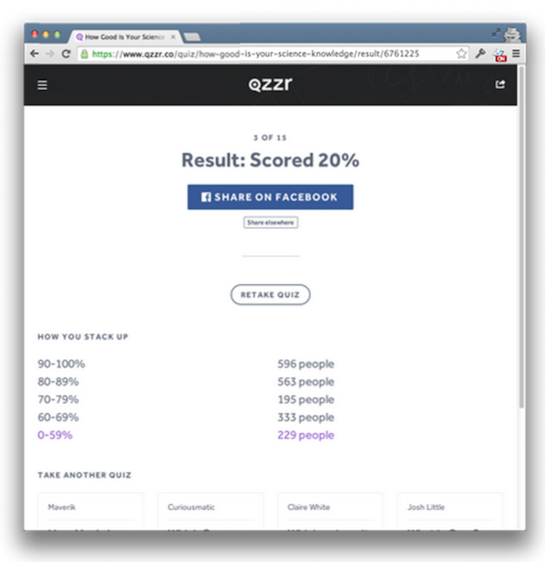
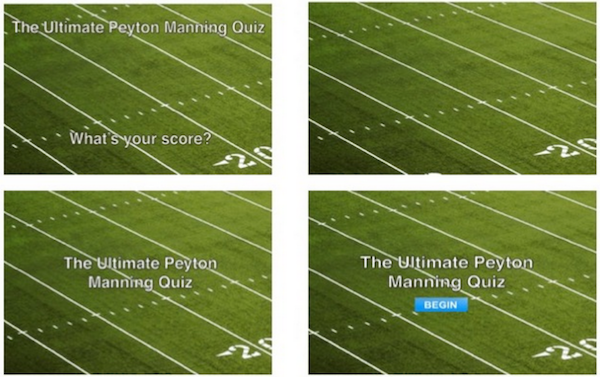
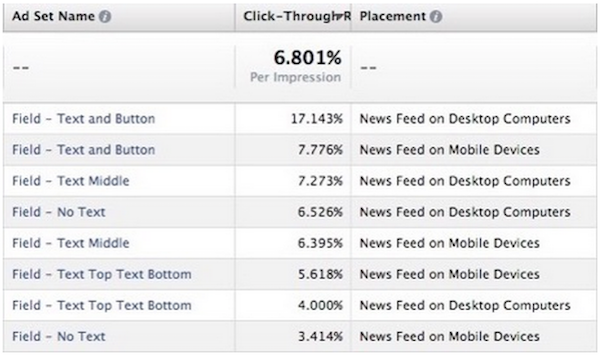
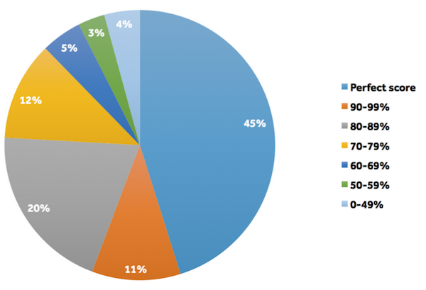
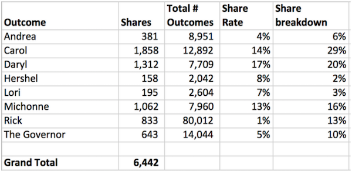
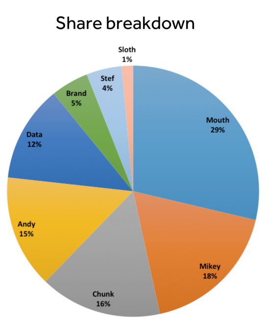

It’s time. Over the last several months, we’ve seen thousands of quizzes taken millions of times created by some of the largest publishers on the planet.
We’ve been learning a ton by watching trends and reviewing the data. Each little thing we’ve learned I’ve wanted to shout from the mountain tops, but I’ve exercised some great restraint in holding off until we had a full picture.
So, why do people share awesome content?
Since the beginning of Qzzr, we’ve been running tests and making constant improvements to every part of the quiz taking experience. One of the most tested aspects of the experience has been the share rates. Much of what we found was expected, but some of what we’ve learned has been quite surprising to us.
Why are shares so important to us? In short, because they are important to our customers. We feel we have an obligation to our customers to create not only the most beautiful and easy-to-use quiz creation tool, but also the most sharable. Qzzr use cases are about as broad as the horizon, but the one common theme across all of them is shares. Everyone wants more shares.
As the social web continues to evolve, we want our customers to be in the center of it along side the most shared content on the web. This is normally where I would elaborate about the value of shares, but I’m not going to do that as I think there is already enough said about that. I’d rather focus my time on sharing what we’ve learned about why people share and what you can do about it. Here are a bunch of experiments we’ve conducted and the results we’ve seen.
Experiment – The Results Page
The number one compliment we get from our customers (by a long margin) is about our design. It’s usually something tied to simplicity, usability, or just plain ol’ pretty pixels. We love that. We try really hard to not only create a product that works well, but looks good while doing it. This is why we were sort of surprised by the result of this experiment.
We started with a nice looking layout like this and attempted to beat it:
Control (share rate of 5.01%)

What did we do?
A bunch of stuff. We started by changing the share buttons from circles to rectangles. Then we made them look more normal. Made them a little smaller. Made the background image smaller and moved it around the page. Added a share pop-up. Reduced the share options. Bumped up the share button.
With all of these tweaks, we decided to run an experiment and keep what worked and abort what didn’t.
At the end, we ended up with this:
Test (share rate of 14.77%)

We wouldn’t have bet on it, but this layout beat the initial design. And when I say beat it, it slaughtered it. This really simple design increased the share rate over the control by 295% in a test of over 18,401 sessions. What’s more amazing is these results were for quizzes taken on our site. The share rate for quizzes embedded on our customers’ websites was much higher.
We’ve not been able to beat the rates on this design. As hard as it is for us to stick with something so plain looking, we understand that we’re in the business of sharable content. The crowd has spoken.
Experiment – Share Image
Getting more shares is only part of the potential. If we get tons of people to share, but no one clicks through, we’ve really done no better. Because most of our shares are on social media, with most of those (84%) being on Facebook, we decided to see if we could increase the click through rate of shares on Facebook. While we’ve already optimized the share text pretty well, we decided to see if we could make an impact with swapping out the images.
On our first test, we tried these four images.

And here are the results (a screenshot directly from our report on Facebook)

What? Are you telling me that that little bit of text and a button increased the click through rate of the quiz by over 300%? Yes. I’m afraid so.
BUT that’s a really popular topic. Peyton Manning was hot at the time. What about a more tame, less clickworthy topic……like introversion?
Here’s our second test. We ran these four images.

And the results speak for themselves.

The pattern remained with the topic of introversion. In fact, now we see an increase of over 4x over the image only.
If you would have asked me about the effect of laying white Impact font on top of images, I would have guessed an increase in click-through rate in the single digit percentages (or a possible decrease). I would have never guessed that it would lead to an increase in the triple digits. Again, the crowd has spoken. Let there be Impact font for all.
Graded vs. Outcome
Now let’s focus on the content. Is there a difference in the share rate of a graded quiz over an outcome quiz?
Shortly after we first launched the outcome quiz type we saw initial results that indicated outcome quizzes had a significant share advantage over graded quizzes. Now that we have a mountain of data, it’s clear that this initial reading was false. Over the last 6 months, outcome quizzes and graded quizzes have an almost identical share rate. Interestingly, they are also about 50/50 in total completions within the Qzzr world. Some of the most popular Qzzr quizzes have been graded quizzes.
Graded Quiz Share Rates
So now that we know that quiz types are pretty equal in terms of share rates, let’s look to see if there is a difference in the outcomes within those quiz types. Is there a difference in share rate based on the score of a graded quiz?
Share rates of graded quizzes

Ummm. Yes. There is. Let’s call this the Pareto principle of shares. Almost 80% (76%) of shares come from people who scored in the top 20%. And an astounding 45% of shares come from people with a perfect score. Only 12% of shares came from scores of 69% and below.
What can we learn from this? People share things that make them look smart or feel good. If you want your quiz to be shared, help them do well on it.
Outcome Quiz Share Rates
So you probably could have guessed that people who score better were more likely to share on graded quizzes, but what about outcome quizzes? Is someone that gets Rick on the Walking Dead quiz more likely to share than someone who gets the Governor? Well, we can answer that.
Which Walking Dead Character Are You?


As a fan of the show, this is really interesting to me. On the surface it would seem like Rick, the main character and hero figure of the show, should get the most shares. This would match the “look good in front of my friends” behavior of graded quizzes, right?
But if you have followed the show and watched every episode (as I have), these results make more sense. Although Rick is the main character, he’s been put in situations where he had to compromise his values for either the safety of his group or personal benefit. Both Carol and Daryl are supporting characters, but unlike Rick, they have stayed true to who they are. In their own way, their tactics ring true with who we all probably want to be in a zombie apocalypse.
Even more interesting is the share rate.

Because of the volume of results that got Rick, the rate was even lower. 80,012 people got the result of Rick, but only 833 chose to share it. This is a very low share rate. Compare that to the 1,312 people who shared out of the 7,709 who got Daryl.
Is AMC reading this? I hope so because this really needs to inform the storyline. Don’t kill off Daryl or Carol. Rick….well…..sorry bud.
Let’s look at another one of my favorites.
Which Goonie Are You?


Let’s talk about share rate first this time. This quiz has a really great share rate, and it’s very evenly distributed amongst the characters. That probably speaks to the warm spot that everyone has in their heart for all of the characters and the movie itself. Even poor Sloth was shared by the people who got him as a result.

When you look at share breakdown it’s a different story. In terms of total number of shares, Mouth takes the cake with Mikey, Chunk, and Andy almost tying for second. Why is this? Isn’t Mouth the misfit supporting character? Why wouldn’t Mikey get shared more than mouth? He didn’t compromise his values in the face of a zombie apocalypse or anything like that.
Well, yes, but although Mouth wasn’t the main character, he was portrayed as the confident, cool, and witty one while Mikey was sort of the asthmatic normal guy with low self-esteem. Again, people are more willing to share results that make them look good. Case in point: poor Sloth.
Which New Car Should You Buy?
So, if we’re not convinced that people share results that make them look good, let’s look at this car quiz created by Jason Torchinsky:

Although this quiz has a somewhat low share rate, we can see that it’s pretty constant.
Question: What do you think is more likely to get shared – a result of a high priced car or a low priced car?

You guessed it. Share rates track very closely to average sticker price of the cars. It’s almost like you could predict the share behavior. 
Conclusion
So, it’s pretty clear that if you want your content to be shared, there are a few things you can do to make that happen more often.
First, use a tool that is going to be optimized for shares. We think Qzzr is a good choice, but you are free to choose for yourself. 
Also, life is short, so help people look good. Qzzr quizzes are meant to be fun. Unless your quiz is meant to be “the most difficult” quiz in a certain topic (which is pretty effective also, BTW), give people a fair shot at doing well. That means no trick questions, and be sure to provide clear answer options. Incidentally, sometimes negative results (like the Governor from Walking Dead) can also help people look good because it’s funny.
We’re going to keep an eye on this share rate thing and continue to optimize Qzzr, and we will bring you the best data we can find to help you create the most sharable content on the web. In the meantime, take a minute and learn how to sing better than anyone else.